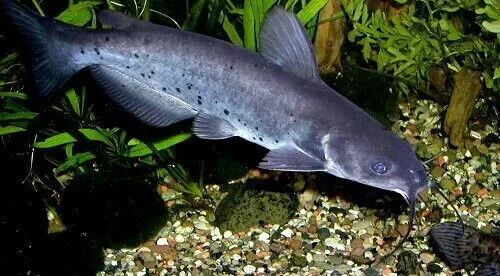

Aquaponics is a revolutionary way to grow food by combining fish farming (aquaculture) with plant cultivation (hydroponics). This system is **eco-friendly, sustainable, and highly efficient**.
Explore our guide to learn how to build your own aquaponics system, choose the best plants and fish, and even make a profit from your setup.
Aquaponics is a **closed-loop system** where fish waste provides essential nutrients for plants, and plants naturally clean the water for the fish. This method eliminates the need for artificial fertilizers and reduces water consumption by up to 90%.
Benefits of Aquaponics
✔ **Water-Efficient**: Uses significantly less water than traditional farming.
✔ **No Soil Required**: Plants grow in a nutrient-rich water medium.
✔ **Organic & Chemical-Free**: No need for pesticides or synthetic fertilizers.
✔ **Higher Yield**: Faster growth rates and higher production.
✔ **Suitable for Urban Areas**: Can be built indoors or in small spaces.
Best Plants for Aquaponics
Some plants thrive better in aquaponic systems. Below are the most recommended choices:
Lettuce
Fast-growing and nutrient-efficient, making it ideal for aquaponics.
Basil
Popular for its medicinal and culinary uses, thrives in aquaponic environments.
Tomatoes
Requires more nutrients but produces high yields in aquaponic systems.
Best Fish for Aquaponics
Choosing the right fish is crucial for a balanced ecosystem. Here are the best options:
Tilapia
Hardy and fast-growing, making them the most commonly used aquaponics fish.

Catfish
Well-adapted to various water conditions and excellent for large systems.
Goldfish
Best suited for decorative or small-scale aquaponics setups.
How to Build an Aquaponics System
Setting up an aquaponics system requires careful planning. Follow these steps:
üîπ **Choose the Right Location**: Ensure access to sunlight and water.
üîπ **Set Up a Fish Tank**: The size depends on your available space and plant needs.
üîπ **Install a Grow Bed**: Use clay pebbles, gravel, or similar grow media.
üîπ **Add a Water Pump**: To circulate water between fish and plants.
üîπ **Introduce Fish and Plants**: Allow the system to stabilize before adding more.
How to Earn from Aquaponics
Aquaponics can be a profitable business! Here’s how:
üì¶ **Sell Organic Vegetables**: Provide fresh, pesticide-free produce to local markets.
üêü **Raise and Sell Fish**: Tilapia, catfish, and trout are in high demand.
üè° **Offer Training Workshops**: Teach others how to build their own systems.
üçΩ **Supply Restaurants**: Many chefs prefer fresh, locally grown ingredients.